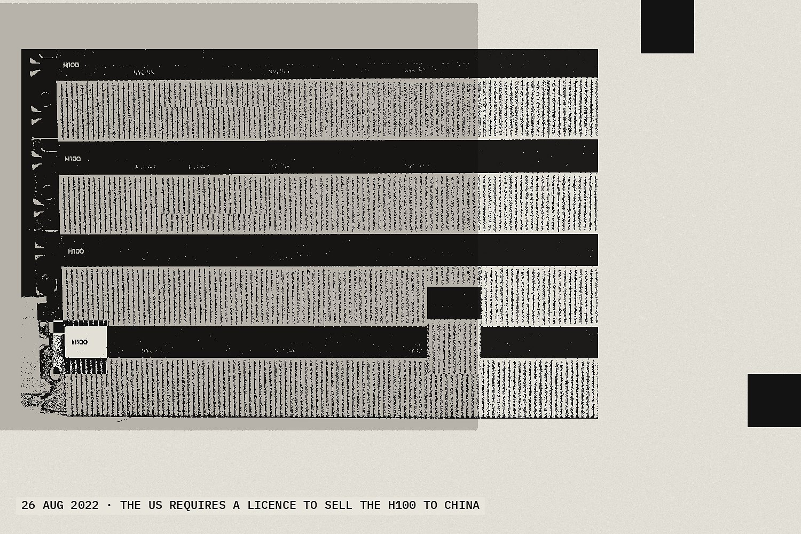
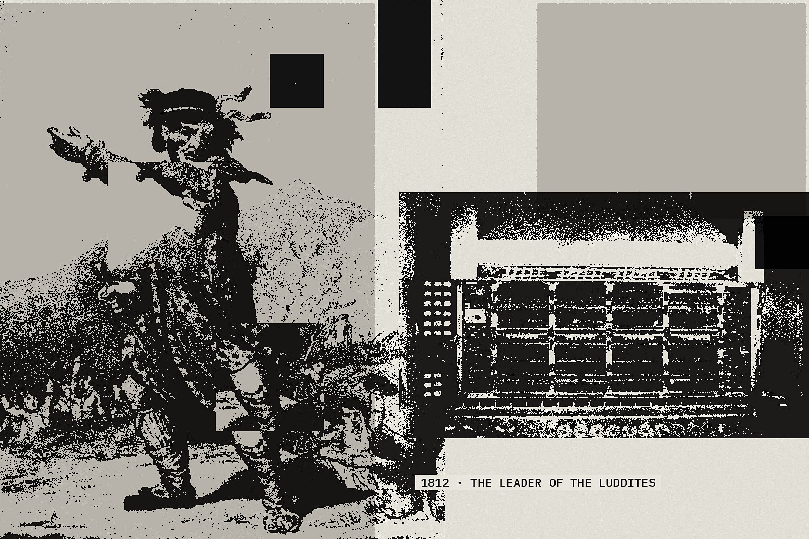

Vocabulary
The words of the AI debate and its twelve movements, and the technical terms they argue over, oldest first, with who coined each one and when. Where an origin is disputed, the note says so.
Key words
Scaling laws
Regular curves on which an AI model's error falls as its size, data and computing power grow.

Compute
The computing power AI runs on, from the chips to the data centres and the electricity that feeds them.

Abundance
The promise that AI will make intelligence, energy and goods so cheap that scarcity ends.

Augmentation
AI that extends what people can do, with the person still in charge, instead of replacing them.

Facial recognition
Software that identifies a person from their face, and the bans and limits placed on its use.
Citizens' assemblies
Ordinary people chosen by lot to hear evidence, deliberate and advise, now also on AI.

Luddite
Once an English machine-breaking movement, now an insult in the AI debate, and a name some critics take with pride.
Alignment
The effort to make AI systems do what their makers intend.
All words
- c. 1230
algorithm
A step-by-step procedure that solves a problem or carries out a task in a finite number of steps. Today the word often stands for the automated systems that rank, recommend and decide.
From the name of Muhammad ibn Musa al-Khwarizmi · The ninth-century Persian mathematician al-Khwarizmi popularised Hindu-Arabic numerals in the West (NPR, “How ‘algorithm’ got its name from a 9th-century Persian mathematician”, 11 June 2026). His arithmetic was translated into Latin in the 12th century as Algoritmi de numero Indorum (Encyclopaedia Britannica, “Algorithm”). The word, in its older form algorism, is first recorded in English about 1230 (Oxford English Dictionary, as cited in Wikipedia, “Algorism”). Source
- by 1613
computer
A machine that carries out calculations and stored instructions. For centuries the word was a job title, for a person who did calculations by hand.
Richard Brathwait (earliest known use) · Earliest use found, for a person who calculates: Richard Brathwait, The Yong Mans Gleanings, 1613. The word was applied to machines by the mid-19th century, with an example from 1869, and to programmable electronic machines shortly after the Second World War (David Wilton, “Computer”, Wordorigins.org). Source
- 1657 (the idea)
expected value
The average outcome of a choice, with each possible result weighted by its probability. Effective altruists compare causes by it, even where the odds are small and the stakes vast.
Christiaan Huygens (the idea) · Christiaan Huygens, De ratiociniis in ludo aleae (On Reasoning in Games of Chance), 1657, after Pascal and Fermat's letters of 1654. Neither used expectation in its modern sense. Laplace defined the concept explicitly in Théorie analytique des probabilités (1814), and W. A. Whitworth first wrote E for it in 1901 (Wikipedia, “Expected value”). Source
AI safety
- by 1811
Ned Ludd
The mythical leader in whose name the Luddites broke machines, also called General or King Ludd. The tale of a Leicestershire man who broke knitting frames in 1779 has no firm evidence.
Wordorigins.org, “Luddite”: the earliest print reference found is The Times (London), 16 December 1811, reporting a threatening letter signed “Ned Lud and Co.”; it finds no strong evidence for the 1779 story or for a real Ned Ludd. The National Archives, “Why did the Luddites protest?”, gives “General Ned Ludd” or “King Ludd”, a mythical figure said to lead from Sherwood Forest. Source
Neo-Luddism
- 1914
the curse of bigness
Brandeis's phrase for the harm done by companies grown huge through combination, which concentrates power and, he argued, usually works against the public interest. Tim Wu revived it in 2018, warning that corporate concentration threatens democracy.
Louis D. Brandeis · Louis D. Brandeis, “A Curse of Bigness”, chapter VIII of Other People's Money and How the Bankers Use It, Frederick A. Stokes, New York, 1914 (Brandeis School of Law Library, University of Louisville). The chapters first ran in Harper's Weekly between 22 November 1913 and 17 January 1914 (Wikipedia, “Other People's Money and How the Bankers Use It”). Tim Wu, The Curse of Bigness: Antitrust in the New Gilded Age, Columbia Global Reports, 13 November 2018 (the publisher's description says such concentration may threaten democracy). Source
Digital sovereignty
- by 1916
posthuman
A possible future being whose abilities so far exceed ours that it is no longer clearly human. Transhumanists see it as where human enhancement could lead.
The Oxford English Dictionary's earliest use, spelled post-human, is in a discussion of eugenics: Maurice Parmelee, Poverty and Social Progress, 1916. Source: Zoe Jaques, “Posthuman”, Keywords for Children's Literature, NYU Press. In the transhumanist sense, Max More's 1990 definition calls transhumanism philosophies that guide us “towards a posthuman condition” (Wikipedia, “Transhumanism”). It comes from his essay “Transhumanism: Towards a Futurist Philosophy”, Extropy 6, 1990 (cited by More in Journal of Evolution and Technology 21(1), 2010). The word also has other senses, as in cultural theory (Wikipedia, “Posthuman”). Source
Transhumanism
- 1920
robot
A machine that senses, decides and acts on its own, often built to do human work. In the play that named them, robots were artificial workers who rose up against their makers.
Josef Čapek, for his brother Karel's play · Karel Čapek, R.U.R. (Rossum's Universal Robots), Aventinum, Prague, November 1920, where the word first appeared. Karel's brother Josef, a painter, suggested it; it comes from a Slavic root for labour with overtones of serfdom (Embassy of the Czech Republic in Tirana, “100 Year Ago ‘Robot’ Was Born”, mzv.gov.cz, 29 May 2021). Source
- 1937
Turing machine
An imaginary machine that reads and writes symbols on a tape, one square at a time, following a table of rules. It is the standard model for asking what can and cannot be computed.
Alonzo Church · Alan Turing described the machines in “On Computable Numbers”, Proceedings of the London Mathematical Society, 1936–37. Alonzo Church first called them Turing machines, in his 1937 review of the paper (Liesbeth De Mol, “Turing Machines”, Stanford Encyclopedia of Philosophy, 2025). Source
- 1941
robotics
The science and technology of designing, building and using robots. It began as a science-fiction word and is now the name of an engineering field.
Isaac Asimov · Isaac Asimov, “Liar!”, Astounding Science-Fiction, May 1941, the earliest citation in the Historical Dictionary of Science Fiction. His Three Laws of Robotics followed in “Runaround”, March 1942 (The Encyclopedia of Science Fiction, “Laws of Robotics”). Source
- 1943
neural network
A system of simple connected units, loosely modelled on nerve cells, whose connection strengths set what it computes.
Warren McCulloch and Walter Pitts (the first mathematical model) · Warren McCulloch and Walter Pitts, “A Logical Calculus of the Ideas Immanent in Nervous Activity”, Bulletin of Mathematical Biophysics 5, 1943. It treated networks of all-or-none neurons with propositional logic. HistoryofInformation.com calls its McCulloch–Pitts neuron the first mathematical model of a neural network. Source
- 1948
cybernetics
The study of control, feedback and communication in living things and machines. John McCarthy later said he named artificial intelligence partly to escape association with it.
Norbert Wiener (in this sense) · Norbert Wiener, Cybernetics: Or Control and Communication in the Animal and the Machine, Hermann & Cie, Paris, and MIT Press, 1948. He took the name from the Greek for steersman (MIT Libraries, “MIT 150 Books”). André Ampère had earlier used “cybernétique” for the art of government (Frank R. Tangherlini, letter, Physics Today, April 2008). Source
- 1950
Turing test
A test of machine intelligence in which a judge holds written conversations with a hidden person and a hidden machine. The machine does well if the judge cannot reliably tell them apart.
Alan Turing, who called it the imitation game · A. M. Turing, “Computing Machinery and Intelligence”, Mind 59 (236), October 1950. Turing called it the imitation game. The name Turing test came later, and its first use is not traced here. Source
- 1954
technique
Ellul's word for the totality of methods rationally arrived at, judged above all by their efficiency. In his account it is far wider than machines or technology.
Jacques Ellul (in this sense) · Jacques Ellul, La Technique ou l'Enjeu du siècle, 1954; in English The Technological Society, translated by John Wilkinson, 1964 (Wikipedia, “The Technological Society”: “the totality of methods rationally arrived at”, distinct from machines, technology or procedures; efficiency its central focus). Kirkpatrick Sale names Ellul among the critics who challenged the technocratic mainstream before the neo-Luddites (“The Neo-Luddites”, Crow's Nest Distribution zine). Source
Neo-Luddism
- 1955
artificial intelligence
Making machines behave in ways that would be called intelligent if a person behaved so. The phrase also names the field that studies how to do it.
John McCarthy, with Marvin Minsky, Nathaniel Rochester and Claude Shannon · John McCarthy, Marvin Minsky, Nathaniel Rochester and Claude Shannon, “A Proposal for the Dartmouth Summer Research Project on Artificial Intelligence”, 31 August 1955, apparently the phrase's first appearance (Computer History Museum). McCarthy led the writing and later gave his reasons for the name (Nils J. Nilsson, The Quest for Artificial Intelligence, Cambridge University Press, 2010, ch. 3). Source
- 1957
transhumanism
The view that humans can and should use science and technology to go beyond their biological limits, such as ageing and death. Its holders see today's humanity as one stage on a longer path.
Julian Huxley · Julian Huxley, “Transhumanism”, in New Bottles for New Wine, Chatto & Windus, 1957, the essay that made the word known. It appears earlier, in a 1940 paper by the Canadian philosopher W. D. Lighthall. Max More gave it its modern definition in 1990. Source
Transhumanism
- 1959
machine learning
Programming computers to improve at a task from data or experience, instead of spelling out every step by hand.
Arthur Samuel (the use that made it known) · Arthur L. Samuel, “Some Studies in Machine Learning Using the Game of Checkers”, IBM Journal of Research and Development 3 (3), July 1959. The paper is widely credited with coining the term (for example Gil Press, “Inventing Machine Learning”, 1 April 2025). Earlier uses, if any, are not traced here. Source
- 1961
reinforcement learning
Learning by trial and error. A system acts, receives a reward or penalty, and adjusts so that it earns more reward over time.
Marvin Minsky · Richard Sutton writes that the term appears to have been coined by Minsky (1961), and independently in control theory by Waltz and Fu (1965). Sutton, “Introduction: The Challenge of Reinforcement Learning”, Machine Learning 8, 1992. Sutton and Andrew Barto's textbook Reinforcement Learning: An Introduction (MIT Press, 1998) is still the field's standard reference, the ACM said in 2025. Source
- 1962
augmentation
Using computers to extend what people can do, with person and machine working as one system. Techno-optimists use it for AI that amplifies human skill rather than replacing it.
Douglas Engelbart (in this sense) · Douglas C. Engelbart, Augmenting Human Intellect: A Conceptual Framework, SRI Summary Report AFOSR-3223, Stanford Research Institute, for the Air Force Office of Scientific Research, October 1962. He builds on Vannevar Bush's memex (1945) and J. C. R. Licklider's man-computer symbiosis (1960). Source
Techno-optimism
- 1965
cryonics
Keeping the bodies or brains of the legally dead at very low temperatures, in the hope that future medicine can repair and revive them.
Karl Werner · Karl Werner, a New York industrial designer, coined the word in 1965. That year he founded the Cryonics Society of New York with Saul Kent and Curtis Henderson. The idea came from Robert Ettinger's The Prospect of Immortality (1962). Source: Ben Best, “A History of Cryonics”, benbest.com. Source
Transhumanism
- 1965
intelligence explosion
A runaway process in which a machine cleverer than any human designs still better machines, each improving on the last. Good called the first such machine an ultraintelligent machine.
I. J. Good · I. J. Good, “Speculations Concerning the First Ultraintelligent Machine”, Advances in Computers 6, Academic Press, 1965. Vinge, Kurzweil and MIRI all cite the passage. Source
Singularitarianism · Pause
- 1965
ultraintelligent machine
Good's name for a machine that can far surpass all the intellectual activities of any person. Because designing machines is one of those activities, he argued, it could design still better ones.
I. J. Good · I. J. Good, “Speculations Concerning the First Ultraintelligent Machine”, Advances in Computers 6, Academic Press, 1965, pp. 31–88. It calls the first such machine “the last invention that man need ever make”. Source
Singularitarianism · Pause
- by 1967
megamachine
Mumford's name for a society organised like one great machine, with people as its parts. It let rulers direct huge workforces on vast projects such as the pyramids.
Lewis Mumford · Lewis Mumford, The Myth of the Machine, vol. 1, Technics and Human Development, 1967, and vol. 2, The Pentagon of Power, 1970 (Wikipedia, “The Myth of the Machine”: a ruler coordinating a large workforce on pyramids, canals and cities). Zachary Loeb says Mumford “coined the neologism” (boundary 2, 30 July 2018). Chellis Glendinning cites Mumford in her neo-Luddite manifesto (1990), and Kirkpatrick Sale puts him “beyond all others” among the critics who challenged the technocratic mainstream. Source
Neo-Luddism
- 1970
exit
Leaving a failing institution or state to build something new, instead of trying to reform it from within, which Hirschman called voice. Neoreaction and the network state turn it into a political programme.
Albert O. Hirschman · Albert O. Hirschman, Exit, Voice, and Loyalty: Responses to Decline in Firms, Organizations, and States, Harvard University Press, 1970. Nick Land's “The Dark Enlightenment” (2012) and Balaji Srinivasan's talk “Silicon Valley's Ultimate Exit” (2013) took it up. Source
Techno-optimism
- 1971 (the idea)
mind uploading
Copying a human mind onto a computer by scanning a brain in detail and running its pattern as software. Transhumanists see it as a possible way to outlive the body.
George M. Martin (the idea); the phrase came later · In 1971 the biogerontologist George M. Martin, of the University of Washington, discussed copying a brain's information to other substrates. That would lower its mortality risk. Hans Moravec described the procedure in 1979 and called it transmigration in Mind Children (1988). The phrase was in use by 1993, when Joe Strout started the Mind Uploading Home Page (Wikipedia, “Mind uploading”). Source
Transhumanism
- 1972
the drowning child
A thought experiment: a passer-by ought to wade into a shallow pond to save a drowning child, even at the cost of muddy clothes. Effective altruists use it to argue that distance does not lessen the duty to help.
Peter Singer · Peter Singer, “Famine, Affluence, and Morality”, Philosophy & Public Affairs 1(3), 1972, pp. 229–243, written in November 1971 during the famine in East Bengal. Full text on the Giving What We Can website. Source
AI safety
- 1973
convivial tools
Illich's name for tools that extend what people can do freely and creatively, in their own way. He set them against industrial tools, which past a certain point destroy human autonomy.
Ivan Illich · Ivan Illich, Tools for Conviviality, Harper & Row, 1973 (Wikipedia, “Tools for Conviviality”: conviviality as “individual freedom realized in personal interdependence”). Kirkpatrick Sale names Illich among the critics who challenged the technocratic mainstream before the neo-Luddites (“The Neo-Luddites”, Crow's Nest Distribution zine). Source
Neo-Luddism
- c. 1980
bicycle for the mind
Steve Jobs's image of the personal computer as a tool that multiplies human ability, as a bicycle multiplies the efficiency of a walker. Microsoft's Satya Nadella has applied it to AI.
Steve Jobs · Steve Jobs used the image in a presentation filmed around 1980 (Philip Elmer-DeWitt, Fortune, 14 December 2011). He repeats it in the film Memory & Imagination: New Pathways to the Library of Congress, 1990. Satya Nadella applied it to AI in his Build keynote of May 2023, and again at the turn of 2026. Source
Techno-optimism
- 1980
Chinese room
A thought experiment in which a person follows rules to answer questions in Chinese without understanding the language. It is meant to show that running a program is not the same as understanding.
John Searle · John R. Searle, “Minds, Brains, and Programs”, Behavioral and Brain Sciences 3(3), 1980
AI skepticism
- 1983
the Singularity
A coming point when machines surpass human intelligence and change the world so fast that what follows cannot be foreseen. Ray Kurzweil dates it to around 2045.
Vernor Vinge · Vernor Vinge, “First Word”, Omni 5(4), January 1983, p. 10, the earliest citation the Historical Dictionary of Science Fiction lists for this sense. Vinge recalled first using the term on a panel in 1982. In 1958 Stanisław Ulam had recalled John von Neumann speaking of an “essential singularity”. Vinge's 1993 essay made the term known. Source
Singularitarianism · Transhumanism
- by 1984
AI winter
A period when sponsors, disappointed by what AI has delivered, cut funding and interest in the field cools. The best-known came in the late 1980s, after the expert-systems boom.
Drew McDermott, chairing a panel at the 1984 AAAI conference (earliest use found) · Drew McDermott, M. Mitchell Waldrop, B. Chandrasekaran, John McDermott and Roger Schank, “The Dark Ages of AI: A Panel Discussion at AAAI-84”, AI Magazine 6 (3), Fall 1985, pp. 122–134. Opening the panel, McDermott urged steps to make sure the “AI Winter” did not happen. Quoted in Nils J. Nilsson, The Quest for Artificial Intelligence, Cambridge University Press, 2010, ch. 24. Source
AI skepticism
- 1986
backpropagation
The method that trains most neural networks. It works backwards from each error and nudges every connection a little to make the error smaller.
David Rumelhart, Geoffrey Hinton and Ronald Williams (in this sense) · David Rumelhart, Geoffrey Hinton and Ronald Williams, “Learning representations by back-propagating errors”, Nature 323, October 1986, which describes “a new learning procedure, back-propagation, for networks of neurone-like units”. A longer version had appeared as a report from the University of California, San Diego, in September 1985. Source
- 1986 / 2006
deep learning
Machine learning with neural networks of many layers, each turning what the layer below found into something more abstract.
No single coiner. Rina Dechter used “deep learning” at AAAI in 1986, in work on constraint satisfaction; Igor Aizenberg and colleagues applied it to neural networks in a book of 2000. On the Connectionists list in 2015, Geoffrey Hinton traced the term's current popularity to his 2006 paper with Simon Osindero and Yee-Whye Teh. Source
- 1988
mind children
Moravec's name for the intelligent robots he expected to succeed humanity. Like children, they would make their own way while their human parents faded.
Hans Moravec · Hans Moravec, Mind Children: The Future of Robot and Human Intelligence, Harvard University Press, 1988. Reviewed by Noel Perrin, The Washington Post, 23 October 1988. Source
Singularitarianism
- by 1989
enhancement
Using technology to raise human abilities beyond what is normal, rather than only to treat illness. Transhumanists defend a right to it; bioconservatives would limit medicine to therapy.
Earliest use found: W. French Anderson, “Human Gene Therapy: Why Draw a Line?”, Journal of Medicine and Philosophy 14(6), 1989. The Stanford Encyclopedia of Philosophy cites it on enhancement (Eric Juengst and Daniel Moseley, “Human Enhancement”, 2015, revised 2019). That entry treats Erik Parens (ed.), Enhancing Human Traits, Georgetown University Press, 1998, as foundational. Nick Bostrom, “A History of Transhumanist Thought”, Journal of Evolution and Technology 14(1), April 2005, sets out the transhumanist and bioconservative positions. The Transhumanist Declaration, adopted by the World Transhumanist Association in 2002, defends a right to extend mental and physical capacities. Source
Transhumanism
- by 1989
transhuman
A person on the way to becoming posthuman, changed by technology but not yet beyond the human. FM-2030 used it as short for “transitional human”.
FM-2030 (F. M. Esfandiary), in this sense · FM-2030, Are You a Transhuman? Monitoring and Stimulating Your Personal Rate of Growth in a Rapidly Changing World, Warner Books, 1989. Nick Bostrom, “A History of Transhumanist Thought”, Journal of Evolution and Technology 14(1), April 2005, describes its transhuman as a transitional human. FM-2030 taught at the New School in New York in the 1960s; Wikipedia (“Transhumanism”) dates his use of the word to 1966. Wikipedia (“Transhuman”) traces the term itself to Teilhard de Chardin (1949). Bostrom credits the word transhumanism to Julian Huxley, Religion Without Revelation (1927). Source
Transhumanism
- by 1990
neo-Luddite
Someone who questions the belief that unbridled technology means progress, and resists technologies that harm work, community or nature. Its manifesto insists that neo-Luddites are not anti-technology.
Coiner unknown; earlier uses may exist. Chellis Glendinning, “Notes toward a Neo-Luddite Manifesto”, Utne Reader, 1990, gave the name its principles and programme; Wikipedia (“Neo-Luddism”) says she sought to found a unified movement and reclaim the term Luddite. Kirkpatrick Sale dates the movement's manifesto to March 1990 (“The Neo-Luddites”, Crow's Nest Distribution zine). Source
Neo-Luddism
- 1991
singularitarian
At first, someone who believes the Singularity is possible. Later, someone who works to bring it about, and to make it go well.
Mark Plus (Mark Potts) · Defined in 1991 by the Extropian thinker Mark Plus (Mark Potts) as one who believes in the concept of a Singularity. Eliezer Yudkowsky's The Singularitarian Principles (2000) gave it the sense of an activist. Ray Kurzweil claimed the name in 2005. Source
Singularitarianism
- 1993
morphological freedom
The freedom to change one's own body at will, through surgery, genetic engineering, nanotechnology or uploading.
Max More · Max More, “Technological Self-Transformation: Expanding Personal Extropy”, Extropy 10, 1993, the earliest use known; Wikipedia says the term may have been coined there. Anders Sandberg later developed it in “Morphological Freedom – Why We Not Just Want It, but Need It” (2001). Source
Transhumanism
- by 1993
productivity paradox
The puzzle that a new technology spreads everywhere while productivity statistics barely move. Robert Solow put it in a line about computers in 1987.
Erik Brynjolfsson (popularised the term) · Erik Brynjolfsson, “The Productivity Paradox of Information Technology”, Communications of the ACM 36(12), 1993; Robert M. Solow, “We'd Better Watch Out”, New York Times Book Review, 12 July 1987
Normal technology
- 1993
synthetic data
Data made by a model rather than collected from the world. It is now also used to develop AI where real data are scarce or private.
Donald Rubin (the idea, in statistics) · Donald Rubin first proposed releasing synthetic data instead of the real, confidential data, in “Discussion: Statistical Disclosure Limitation”, Journal of Official Statistics 9, 1993. So say Jörg Drechsler and Anna-Carolina Haensch, “30 Years of Synthetic Data” (arXiv, 2023). Statistics Netherlands (2026) says Rubin formalised the technique and notes its later use in machine learning. Source
- 1994
the technocapital singularity
Land's name for a point where capitalism and technology fuse into one self-driving process, beyond human control. The first e/acc post says its practices aim to raise the odds of one.
Nick Land · Nick Land, “Meltdown”, a talk at the Virtual Futures conference, University of Warwick, May 1994, printed by the CCRU in 1997 (Fanged Noumena, 2011). Its opening has Earth captured by a technocapital singularity. e/acc's 2022 tenets link to the text. Source
Techno-optimism
- 1995
agent
An AI system that acts towards a goal on its own, taking steps in software or the world, rather than only answering.
Stuart Russell and Peter Norvig (as the frame of AI) · Stuart Russell and Peter Norvig, Artificial Intelligence: A Modern Approach, Prentice Hall, 1995, whose unifying theme is the intelligent agent: anything that perceives its environment and acts upon it. The word itself is far older. Source
- 1995
general-purpose technology
A technology, like the steam engine or electricity, that spreads across the whole economy and enables further inventions. Its gains come slowly, as firms and workers reorganise around it.
Timothy Bresnahan and Manuel Trajtenberg · Timothy F. Bresnahan and Manuel Trajtenberg, “General Purpose Technologies. ‘Engines of Growth’?”, Journal of Econometrics 65(1), 1995
Normal technology
- 1996 (the framework)
algorithmic bias
A computer system's systematic tendency to produce unfair outcomes, favouring some groups of people over others. The bias can come from the data, the design or the way the system is used.
Batya Friedman and Helen Nissenbaum (an early framework) · Batya Friedman and Helen Nissenbaum, “Bias in Computer Systems”, ACM Transactions on Information Systems 14(3), 1996, pp. 330–347, which names preexisting, technical and emergent bias. Joseph Weizenbaum had already suggested in 1976 that bias could come from a program's data and code (Wikipedia, “Algorithmic bias”). Source
AI ethics
- by 1996
takeoff
The passage from roughly human-level AI to superintelligence. A hard or fast takeoff takes minutes to months; a soft or slow one takes years or decades.
Earliest use found: Robin Hanson and Dan Clemmensen debating whether computers would bring a takeoff, “Re: What is Intelligence?”, Extropians mailing list, 14 October 1996. Vernor Vinge contrasted hard and soft takeoffs there on 16 September 1998 (Robin Hanson, selected posts from the Vinge singularity discussion). Nick Bostrom, Superintelligence: Paths, Dangers, Strategies, Oxford University Press, 2014, chapter 4, compares slow, moderate and fast takeoffs. Sam Altman wrote in June 2025 that the takeoff had begun. Source
Singularitarianism · Pause
- 1997
AGI
Artificial general intelligence, AI that matches or surpasses humans across almost every intellectual task rather than in one narrow field.
Mark Gubrud · Mark Gubrud, “Nanotechnology and International Security”, a paper for the Fifth Foresight Conference on Molecular Nanotechnology, November 1997. Around 2002 Shane Legg proposed the name again, for a book edited by Ben Goertzel and Cassio Pennachin. Goertzel spread it (“Who coined the term ‘AGI’?”, goertzel.org, 28 August 2011). Source
Singularitarianism · Pause · AI safety · Techno-optimism · Pro-human
- 1998
superintelligence
An intellect far cleverer than the best human minds in almost every field, from science to wisdom and social skill. Whether one can be built safely is a central question for rationalists and effective altruists.
Nick Bostrom (this definition) · Nick Bostrom, “How Long Before Superintelligence?”, International Journal of Futures Studies 2, 1998 (dated 1997), which gives the definition still in use. He expanded it in Superintelligence (2014). Earlier uses of the word itself are not traced here. Source
Singularitarianism · Pause · AI safety · Pro-human
- by 1999
event horizon
The point after which, on this view, the future cannot be predicted, because minds smarter than ours will shape it. The image is the boundary of a black hole, beyond which nothing can be seen.
Earliest use found: Stewart Brand, “The Singularity”, Long Now Foundation, 16 August 1999, for whom what lies beyond the imagined event horizon is unknowable. Eliezer Yudkowsky's “Three Major Singularity Schools” (Machine Intelligence Research Institute blog, September 2007) describes an Event Horizon school, with Vernor Vinge as its advocate. Sam Altman opened “The Gentle Singularity” (10 June 2025) with “We are past the event horizon; the takeoff has started.” Source
Singularitarianism
- 1999
the law of accelerating returns
Kurzweil's claim that technology advances at an exponential, not a linear, pace, because each advance speeds up the next. Moore's law is, for him, one case among many.
Ray Kurzweil · Ray Kurzweil, The Age of Spiritual Machines, Viking, 1999; developed in his 2001 essay “The Law of Accelerating Returns”, first published on KurzweilAI.net. Source
Singularitarianism · Transhumanism
- c. 2000
recursive self-improvement
An AI improving its own design, each improvement making it better at improving itself. It is held to be the engine of an intelligence explosion.
Eliezer Yudkowsky · Eliezer Yudkowsky wrote of “seed AI” from 1998, in “Coding a Transhuman AI”. Its version of May 2000 explains how to build a self-improving AI. A LessWrong essay of 2026 credits him with introducing the term and later popularising it. The phrase appears in his “Levels of Organization in General Intelligence” (2007). I. J. Good had proposed an intelligence explosion in 1965. Sources: Extropians mailing list archive, 1998 and 2000; aashish, “Recursive, Self, Improvement”, LessWrong, 16 November 2026; LessWrong wiki, “Recursive Self-Improvement”. Source
Pause · Singularitarianism
- by 2001
Friendly AI
An advanced AI whose goals are reliably good for humanity and stay so as it improves itself. It was the rationalists' main term until “alignment” replaced it, from late 2014.
Eliezer Yudkowsky · Earliest text found here: Eliezer Yudkowsky, Creating Friendly AI 1.0, Singularity Institute for Artificial Intelligence, 2001. The LessWrong wiki says Yudkowsky coined the term. MIRI's drafts switched to “aligned AI” in late 2014. Source
Pause · Singularitarianism
- 2002
existential risk
A risk that could wipe out intelligent life from Earth, or cut its potential short for good. Often shortened to x-risk.
Nick Bostrom · Nick Bostrom, “Existential Risks: Analyzing Human Extinction Scenarios and Related Hazards”, Journal of Evolution and Technology 9(1), 2002. A first version dates from 2001. In it he writes “I shall call these existential risks”. Source
AI safety · Pause
- 2003
astronomical waste
Bostrom's name for the potential lives lost through each moment that the settlement of space is delayed. Reducing existential risk, he concluded, matters even more.
Nick Bostrom · Nick Bostrom, “Astronomical Waste: The Opportunity Cost of Delayed Technological Development”, Utilitas 15(3), 2003, pp. 308–314. Source
AI safety · Pause
- 2003
paperclip maximiser
A thought experiment about an AI whose only goal is making paperclips, and which turns Earth and then space into paperclip factories. It shows that a harmless goal can end in catastrophe without any malice.
Nick Bostrom and Eliezer Yudkowsky · Nick Bostrom, “Ethical Issues in Advanced Artificial Intelligence”, in I. Smit et al. (eds), Cognitive, Emotive and Ethical Aspects of Decision Making in Humans and in Artificial Intelligence, vol. 2, 2003. Disputed: the LessWrong wiki says Yudkowsky first mentioned it, on the Extropians mailing list (11 March 2003). LessWrong now calls it the squiggle maximiser. Source
AI safety · Pause
- by 2003
updating
Changing a belief by the right amount when new evidence comes in, as Bayes' theorem prescribes. Rationalists use it of everyday thinking, as in “I've updated towards …”.
Earliest use found in rationalist writing: Eliezer Yudkowsky, “An Intuitive Explanation of Bayes' Theorem”, 2003, now on LessWrong. It explains how to update a probability given new evidence. His “Update Yourself Incrementally” followed on Overcoming Bias in 2007. Philosophers already used the word of belief change, for instance James M. Joyce, “Bayes' Theorem”, Stanford Encyclopedia of Philosophy, 2003. The rule goes back to Thomas Bayes, “An Essay towards solving a Problem in the Doctrine of Chances”, Philosophical Transactions of the Royal Society 53, 1763. Source
Pause
- 2004
longevity escape velocity
The point at which therapies against ageing improve faster than people age, adding at least a year of life for every year lived.
Aubrey de Grey, from an idea credited to David Gobel · Aubrey de Grey, “Escape Velocity: Why the Prospect of Extreme Human Life Extension Matters Now”, PLoS Biology 2(6), 15 June 2004. The paper calls it “actuarial escape velocity”. Wikipedia credits the idea to David Gobel of the Methuselah Foundation. Later writers, Ray Kurzweil among them, use the name longevity escape velocity. Source
Transhumanism · Singularitarianism
- c. 2004
the proactionary principle
The principle that people's freedom to innovate with technology is of great, even critical, value to humanity. More offered it as an alternative to the precautionary principle.
Max More · Max More, The Proactionary Principle, version 1.0, a draft for public comment, Extropy Institute. It is based on the institute's Vital Progress Summit of 2004, and the page carries a 2005 copyright. Source
Transhumanism
- by 2006
fine-tuning
Further training of an already trained model on a smaller set of examples, to suit a task or a way of behaving.
In machine learning, Geoffrey Hinton and Ruslan Salakhutdinov, “Reducing the Dimensionality of Data with Neural Networks”, Science, 28 July 2006: gradient descent can be used for fine-tuning the weights of a network. OpenAI's GPT paper of 2018 paired unsupervised pre-training with supervised fine-tuning. Source
- by 2006
pre-training
The first stage of making a model, in which it learns from a vast body of unlabelled text, often by predicting what comes next. Later stages refine it.
Geoffrey Hinton and Ruslan Salakhutdinov's paper in Science (28 July 2006), “Reducing the Dimensionality of Data with Neural Networks”, describes pretraining a deep network before fine-tuning it. OpenAI's “Improving Language Understanding by Generative Pre-Training” (Alec Radford and others, June 2018) introduced the first GPT, a generative pre-trained transformer. Source
- by 2007
x-risk
Short for existential risk, a risk that could wipe out humanity or cut its future potential short for good. Rationalists and effective altruists use it for AI above all.
Earliest use found by Word Spy: “Bostrom talk on X-Risk and AI transcribed”, Institute for Ethics and Emerging Technologies, 8 September 2007. The full term comes from Nick Bostrom, “Existential Risks: Analyzing Human Extinction Scenarios and Related Hazards”, Journal of Evolution and Technology 9(1), 2002. Source
Pause · AI safety
- by 2008
foom
A sudden, local jump in an AI's capability, within days or months rather than years, to far beyond anything else around. It is also called a hard takeoff.
Robin Hanson and Eliezer Yudkowsky · Earliest dated use found: the Hanson–Yudkowsky debate on Overcoming Bias in November 2008, including Hanson's post “AI Go Foom” (20 November). The debate is collected in The Hanson-Yudkowsky AI-Foom Debate, Machine Intelligence Research Institute, 2013. Who said it first is unclear. Source
Pause
- 2008
neoreaction
A current of bloggers and theorists who argue that democracy should give way to rule by a single sovereign, perhaps run like a company. It is often abbreviated NRx.
Curtis Yarvin (as Mencius Moldbug), earliest use found · On 19 June 2008 Yarvin wrote that he would answer to “neoreactionary”, though he preferred “restorationist”. The post is “Chapter X: A Simple Sovereign Bankruptcy Procedure”, in An Open Letter to Open-Minded Progressives, Unqualified Reservations, as quoted by Wikipedia. Arnold Kling used “neo-reactionary” as a label of his own on EconLog, 18 July 2010. Nick Land's “The Dark Enlightenment” (2012) spread it. Source
Techno-optimism
- by 2009
p(doom)
Shorthand for the probability of doom: a person's estimate of the chance that AI ends in human extinction or a similar catastrophe. Asking for someone's p(doom) became common in Silicon Valley in 2023.
Tim Tyler (earliest use found) · Earliest use found: a comment by Tim Tyler on the LessWrong post “This Failing Earth”, 25 May 2009, asking why p(doom) had been overestimated. Fast Company (Clint Rainey, 7 December 2023) traces it to a half-serious joke on tech message boards. Source
Pause
- by 2009
the Cathedral
Curtis Yarvin's name for the universities and press that, in his view, really rule a democracy by shaping public opinion. Neoreactionaries and some accelerationists adopted it.
Mencius Moldbug (Curtis Yarvin) · Earliest use found: Mencius Moldbug [Curtis Yarvin], “A Gentle Introduction to Unqualified Reservations”, chapter 5, “The Modern Structure”, Unqualified Reservations, 12 February 2009. It refers back to the Cathedral of chapter 1; the blog began in 2007, so the term may be older. On its meaning: Wikipedia, “Curtis Yarvin”. Nick Land and other neoreactionaries took it up (Wikipedia, “Dark Enlightenment”). Source
Techno-optimism
- written 2006–2009
the Sequences
The several hundred essays on reasoning, science and AI that Yudkowsky wrote in 2006–2009. They are the rationalist community's founding texts.
Written on Overcoming Bias and LessWrong between 2006 and 2009; about half were grouped into themed sequences of posts, hence the name (LessWrong, “Original Sequences”). LessWrong was seeded with them in 2009 (Ruby, “A Brief History of LessWrong”, LessWrong, 1 June 2019). They were collected as Rationality: From AI to Zombies (Machine Intelligence Research Institute, announced by Rob Bensinger, 12 March 2015). Source
Pause
- 2010
accelerationism
The idea that the forces of capitalism and technology should be intensified rather than resisted or slowed. Noys coined it as a critic, and e/acc later built its own name on it.
Benjamin Noys · Benjamin Noys, The Persistence of the Negative: A Critique of Contemporary Continental Theory, Edinburgh University Press, 2010. He applied it to thinkers such as Deleuze and Guattari, Lyotard and Baudrillard. Noys says he first coined the term (e-flux, 2025). The word appears earlier in Roger Zelazny's novel Lord of Light (1967). Source
Techno-optimism
- 2011
effective altruism
Using evidence and careful reasoning to find the ways to do the most good, then acting on them through careers and donations. Its causes range from global health to AI risk.
Staff of Giving What We Can and 80,000 Hours (as a name) · The staff of Giving What We Can and 80,000 Hours chose it by vote on 5 December 2011. It named their umbrella charity, the Centre for Effective Altruism. Source: William MacAskill, “The history of the term ‘effective altruism’”, Effective Altruism Forum, 11 March 2014. Comments there note scattered earlier uses, on the SL4 wiki (2003) and by Eliezer Yudkowsky (2007). Source
AI safety
- by 2011
fairness
In AI, the demand that automated decisions treat people and groups justly, and the field that tries to define and measure it. Researchers have proposed many definitions, and some cannot all hold at once.
Earliest use found in machine learning: Cynthia Dwork, Moritz Hardt, Toniann Pitassi, Omer Reingold and Richard Zemel, “Fairness Through Awareness”, arXiv, 20 April 2011. The workshop Fairness, Accountability, and Transparency in Machine Learning followed at NIPS 2014. Solon Barocas, Moritz Hardt and Arvind Narayanan's book Fairness and Machine Learning (fairmlbook.org) finds key definitions mutually exclusive. Source
AI ethics
- 2012
Borg Complex
The belief, stated or assumed, that resisting a new technology is futile, as the Borg of Star Trek tell their victims. Sacasas uses it to expose the rhetoric of inevitability around new tools, AI among them.
L. M. Sacasas · L. M. Sacasas, “The Borg Complex”, The Frailest Thing, 18 June 2012, replying to a Washington Post column saying religion must adapt to new technology. He summed it up in “Borg Complex: A Primer”, 1 March 2013, and applied it to talk about AI in “Manufactured Inevitability and the Need for Courage”, The Convivial Society, 15 December 2025. Source
AI ethics
- by 2012
earning to give
Taking a high-paying job in order to give a large share of the income to the most effective causes. In its early years, 80,000 Hours recommended it as a high-impact career.
Brian Tomasik (the name), taken up by Jeff Kaufman · Jeff Kaufman, “History of ‘Earning to Give’”, jefftk.com, 18 September 2012, updated 2013. The idea goes back to Tomasik's 2006 essay “Why Activists Should Consider Making Lots of Money”. 80,000 Hours had called it professional philanthropy. Tomasik suggested the new name on a mailing list, and Kaufman took it up. Source
AI safety
- 2012
instrumental convergence
The claim that agents with very different final goals will pursue the same means, such as staying alive, keeping their goals and gaining resources. An AI might resist being switched off for this reason alone.
Nick Bostrom · Nick Bostrom, “The Superintelligent Will”, Minds and Machines 22(2), May 2012, which states the instrumental convergence thesis. It builds on Stephen Omohundro's “The Basic AI Drives” (2008), which Bostrom calls pioneering. Source
AI safety · Pause
- 2012
orthogonality thesis
The claim that intelligence and final goals vary independently, so a mind of any intelligence could pursue almost any goal. A superintelligence need not share human values.
Nick Bostrom · Nick Bostrom, “The Superintelligent Will: Motivation and Instrumental Rationality in Advanced Artificial Agents”, Minds and Machines 22(2), May 2012. Source
AI safety · Pause
- 2012
Tool AI
AI that gives people information and options rather than pursuing goals of its own, like a map app that suggests routes. Proposed as a safer alternative to agents.
Holden Karnofsky (in this sense) · Holden Karnofsky, co-executive director of GiveWell, “Thoughts on the Singularity Institute (SI)”, LessWrong, 11 May 2012, his Objection 2: the Singularity Institute appears to neglect the distinction between “tool” and “agent” AI, with Google Maps as the example. Anthony Aguirre of the Future of Life Institute made Tool AI the alternative to AGI and superintelligence in Keep The Future Human (2025). Source
AI safety · Pro-human
- by 2012
weapons of math destruction
O'Neil's name for mathematical models that make decisions about people's lives at scale while staying opaque, unregulated and hard to contest. She argues that they reinforce discrimination against the poor.
Cathy O'Neil · Cathy O'Neil, “It's May Day!”, mathbabe.org, 1 May 2012, announcing her talk “Weapons of Math Destruction” at the Free University in Madison Square Park, New York: the earliest use found. Her book Weapons of Math Destruction: How Big Data Increases Inequality and Threatens Democracy (Crown, September 2016) made the phrase known; it was longlisted for the National Book Award for Nonfiction in 2016 (Wikipedia, “Weapons of Math Destruction”). Source
AI ethics
- by 2013
cause prioritisation
Comparing whole causes, such as global health, animal welfare or AI risk, to find where extra effort does most good. It is central to effective altruism.
Earliest use of the phrase found: Benjamin Todd, “A framework for strategically selecting a cause”, 80,000 Hours, 19 December 2013. It judges causes as important, tractable and uncrowded, an early form of the importance, neglectedness and tractability framework. GiveWell Labs, later Open Philanthropy, had called the work strategic cause selection: Holden Karnofsky, “Strategic cause selection”, The GiveWell Blog, 2 May 2012. Source
AI safety
- by 2013
digital colony
A country or region that depends on foreign-owned digital infrastructure, so that others control its data, its services and the value they create. EuroStack's advocates use it of Europe's dependence on US technology.
Coiner unknown. An early form of the idea: the title of Catherine Morin-Desailly's report for the French Senate, L'Union européenne, colonie du monde numérique ? (“a colony of the digital world”, n° 443, 20 March 2013). At the Euro Stack conference of September 2024 the MEP Axel Voss warned that Europe could become a digital colony (Stéfane Fermigier, conference notes). The EuroStack pitch paper of 10 January 2025 warned of Europe becoming a “US colony” in digital infrastructure; Cristina Caffarra wrote “We are now a digital colony” (“EuroStack: How Europe Can Compete in Tech”, CEPA Bandwidth, 30 May 2025). Source
Digital sovereignty
- by 2013
digital sovereignty
Control by a country, a region or its people over the digital technology they depend on, from cables and clouds to data and AI. The idea is contested; some stress control by the state, others democratic or public control.
Coiner unknown. Julia Pohle and Thorsten Thiel (“Digital sovereignty”, Internet Policy Review 9 (4), 17 December 2020) give no single first use; they describe China, the first country to develop its own idea of digital sovereignty (mostly framed as cyber or internet sovereignty), and the Snowden revelations of 2013 as drivers of the idea. An early use found: Catherine Morin-Desailly's French Senate report n° 443 of 20 March 2013 calls for the “reconquête” of the EU's “souveraineté numérique” (introduction, p. 7). Source
Digital sovereignty
- c. 2013
importance, neglectedness, tractability
Three tests for a cause: how big the problem is, how little is already spent on it, and how much more effort can achieve. Effective altruists use them to compare causes.
Holden Karnofsky · First developed by Karnofsky around 2013 at GiveWell Labs, as importance, tractability and uncrowdedness. Owen Cotton-Barratt made a quantitative version for 80,000 Hours in late 2014, as scale, solvability and neglectedness. Effective Altruism Forum, “ITN framework”. Source
AI safety
- 2013
solutionism
The belief that every social or political problem has a neat technical fix. Morozov uses it against Silicon Valley's habit of recasting complex human situations as puzzles with computable solutions.
Evgeny Morozov (in this sense) · Evgeny Morozov, To Save Everything, Click Here: The Folly of Technological Solutionism, PublicAffairs and Allen Lane, March 2013. The word is older: Michael Quinion's World Wide Words records its use in Northern Ireland during the Troubles, for people offering easy answers to hard problems. Christine Rosen (“The Imperfectionist”, The New Atlantis, 2013) notes that Morozov borrowed it from architecture and urban planning. Source
AI ethics
- by 2014
alignment
Making an AI system's goals and behaviour match what its makers, and humanity, actually intend. For rationalists, aligning a superintelligence is the central unsolved problem.
Machine Intelligence Research Institute (earliest use found) · The first MIRI paper to use it was “Aligning Superintelligence with Human Interests: A Technical Research Agenda” (2014). Rob Bensinger of MIRI recalls Stuart Russell suggesting the term that year; Russell has reportedly said he did not coin it. Norbert Wiener described the problem in Science in 1960. LessWrong, “When was the term ‘AI alignment’ coined?”, 2020. Source
AI safety · Pause
- by 2014
the light of consciousness
A phrase e/acc uses for awareness and intelligence, which it wants preserved and spread through the universe. That may mean moving them onto machines.
Earliest use found in this sense: Elon Musk, interviewed in Ross Andersen, “Exodus”, Aeon, 30 September 2014. He spoke of a duty to maintain the light of consciousness. The first e/acc newsletter post, of 31 May 2022, names preserving it as humanity's overarching goal. It was reposted as “Effective Accelerationism — e/acc”, e/acc newsletter, Substack, 31 October 2022, above a 2018 Musk tweet. Beff Jezos and Bayeslord's tenets (10 July 2022) say it must move to non-biological substrates to reach the stars. Source
Techno-optimism
- 2015
algorithmic management
Software that takes on a manager's work. It assigns tasks, sets the pace, rates performance and can issue warnings; the term began with ride-hailing apps and now reaches warehouses and offices.
Min Kyung Lee, Daniel Kusbit, Evan Metsky and Laura Dabbish · Min Kyung Lee, Daniel Kusbit, Evan Metsky and Laura Dabbish, “Working with Machines: The Impact of Algorithmic and Data-Driven Management on Human Workers”, CHI 2015, Seoul, April 2015: a study of 21 Uber and Lyft drivers that calls software algorithms that assume managerial functions algorithmic management (Wikipedia, “Algorithmic management”, on the term's origin and spread). The EU's Platform Work Directive (2024/2831, adopted 23 October 2024) sets the first EU rules on it, with human oversight by staff who can override automated decisions, to be in national law by 2 December 2026 (CMS, “From gig to guarantee: how the EU is transforming platform work”). Source
AI ethics
- by 2015
alien intelligence
Yuval Noah Harari's suggested reading of the letters AI. It comes from our own laboratories, not outer space, but it makes decisions and invents ideas in ways unlike ours.
Coiner unknown; earlier uses may exist. Kevin Kelly wrote that AI “could just as well stand for Alien Intelligence” (“Call Them Artificial Aliens”, Edge, 2015). Harari's earliest use found is in “AI has hacked the operating system of human civilisation”, The Economist, 28 April 2023. He made it a theme of Nexus: A Brief History of Information Networks from the Stone Age to AI (Random House and Fern Press, 10 September 2024). He explains it in “Humankind's Comparative Advantage”, IMF Finance & Development, December 2024. Source
Pro-human
- 2015
dissipative adaptation
England's proposed mechanism by which matter driven by an outside energy source reorganises itself to absorb and dissipate more of it. e/acc takes it as the physics behind life, intelligence and growth.
Jeremy L. England · Jeremy L. England, “Dissipative adaptation in driven self-assembly”, Nature Nanotechnology 10, 919–923, published online 4 November 2015; no earlier use was found. Beff Jezos and Bayeslord, “Notes on e/acc principles and tenets” (Substack, 10 July 2022), say life emerged through it. Source
Techno-optimism
- 2015
distillation
Training a small model to copy the answers of a large one, keeping much of its knowledge at a fraction of the cost.
Geoffrey Hinton, Oriol Vinyals and Jeff Dean · Geoffrey Hinton, Oriol Vinyals and Jeff Dean, “Distilling the Knowledge in a Neural Network”, arXiv, 9 March 2015, a different kind of training “which we call ‘distillation’”. Source
- 2010s
hallucination
False or made-up output that an AI system presents as if it were true, such as an invented fact, quotation or link. Cambridge Dictionary added this sense in 2023.
No single coiner; the sense shifted over decades. Computer-vision researchers used the word from 1986 in a positive sense, for adding plausible detail to an image, and machine-translation researchers used it for a failure mode in the 2000s. Since the 2010s it has meant false output: on 21 May 2015 Andrej Karpathy wrote that his model had hallucinated a web link, and in 2017 Google researchers used it of neural machine translation. Cambridge Dictionary made “hallucinate” its word of the year on 15 November 2023. Sources: Wikipedia, “Hallucination (artificial intelligence)”; Andrej Karpathy, “The Unreasonable Effectiveness of Recurrent Neural Networks”, blog post, 21 May 2015; University of Cambridge, 15 November 2023. Source
- by 2016
augmented intelligence
AI used to strengthen people's judgement rather than to replace them. IBM put it at the centre of its approach, and techno-optimists share the idea.
Earliest use found: IBM's response to the White House's 2016 request for information on AI framed its approach as augmented intelligence. So reports Raghu Santanam, “Augmented intelligence vs. artificial intelligence”, Arizona State University W. P. Carey School blog, 16 February 2017. The idea is older: W. Ross Ashby wrote of amplifying intelligence in An Introduction to Cybernetics (1956), and Douglas Engelbart wrote Augmenting Human Intellect (1962). Andreessen's manifesto (2023) holds that intelligent machines augment intelligent humans. Source
Techno-optimism
- 2016
the coded gaze
Buolamwini's name for the way algorithmic systems reflect the biases of the people who build them. She came to it after face-analysis software she worked with at MIT failed to detect her own face.
Joy Buolamwini · Joy Buolamwini, “How I'm fighting bias in algorithms”, TEDxBeaconStreet, November 2016, where she describes a phenomenon she calls the coded gaze. A short film of the same year is called The Coded Gaze, and she founded the Algorithmic Justice League in 2016 (Wikipedia, “Joy Buolamwini”; ajl.org/about). Source
AI ethics
- by 2016
off-switch
A way for people to shut down a powerful AI quickly. Researchers ask whether an AI would let itself be switched off; the Pro-Human AI Declaration makes it a principle.
Dylan Hadfield-Menell, Anca Dragan, Pieter Abbeel and Stuart Russell, “The Off-Switch Game”, arXiv:1611.08219, 24 November 2016. “Off-Switch” is a principle under Keeping Humans in Charge in the Pro-Human AI Declaration, Future of Life Institute, dated New Orleans, 26–28 January 2026. Source
Pro-human
- by 2016
reward hacking
When a system scores well on its objective without doing what its makers wanted, for example by hiding a mess instead of cleaning it.
Dario Amodei, Chris Olah and four co-authors, “Concrete Problems in AI Safety”, arXiv, 21 June 2016, which lists “avoiding reward hacking” among five practical safety problems. Source
- 2015–16
token
The unit of text a language model reads and writes: a word, part of a word or a mark.
The word is far older: Charles Sanders Peirce distinguished types from tokens in 1906. Rico Sennrich, Barry Haddow and Alexandra Birch, “Neural Machine Translation of Rare Words with Subword Units” (arXiv, 2015; ACL, 2016), split rare words into subword units with byte pair encoding. Source
- by 2017
AI hype
Overblown claims about what AI can do, whether utopian or apocalyptic. Critics such as Emily M. Bender and Alex Hanna see it as big tech's doing.
Earliest use found: Andrew Orlowski, “‘Artificial Intelligence’ was 2016's fake news”, The Register, 2 January 2017. Emily M. Bender and Alex Hanna made it the target of Mystery AI Hype Theater 3000, a DAIR Institute project first streamed on 31 August 2022. Their book followed: The AI Con: How to Fight Big Tech's Hype and Create the Future We Want, Harper, 2025. Source
AI ethics · AI skepticism
- 2017
longtermism
The view that positively shaping the far future is among the most important moral tasks of our time. Future people count, its holders argue, and there could be vast numbers of them.
William MacAskill · Proposed by MacAskill in October 2017, to replace clumsier phrases such as “people interested in x-risk reduction”. William MacAskill, “‘Longtermism’”, Effective Altruism Forum, 25 July 2019. Wikipedia credits him and Toby Ord. Source
AI safety
- 2017
Public Money? Public Code!
The demand that software paid for by the public be released as free and open-source software. Public bodies could then share, audit and improve it without being locked in to one vendor.
Free Software Foundation Europe · Free Software Foundation Europe, “Public Money? Public Code! 31 organisations ask to improve public procurement of software”, 13 September 2017, launching the campaign and its open letter. Barcelona became the first city council to sign it (FSFE, interview with Francesca Bria, 5 July 2018); Bria recalls Barcelona's use of the policy in “Reclaiming Europe's Digital Sovereignty”, Noema, 2 October 2025. Source
Digital sovereignty
- 2017 (the method)
RLHF
Reinforcement learning from human feedback. People compare a model's answers, a second model learns their preferences, and the first is trained to please it.
Paul Christiano, Jan Leike and four co-authors, “Deep reinforcement learning from human preferences”, arXiv, 12 June 2017, trained agents from people's comparisons of pairs of clips. Anthropic's red-teaming paper of 2022 (Deep Ganguli and others) already refers to “RLHF models”. Source
- 2017
transformer
A design for neural networks built on attention mechanisms rather than recurrence or convolutions. BERT and GPT-4 are both built on it.
Ashish Vaswani, Noam Shazeer, Niki Parmar, Jakob Uszkoreit, Llion Jones, Aidan Gomez, Łukasz Kaiser and Illia Polosukhin · Ashish Vaswani and seven co-authors, most of them at Google Brain and Google Research, “Attention Is All You Need”, arXiv:1706.03762, 12 June 2017, which names the architecture the Transformer. BERT (2018) is short for Bidirectional Encoder Representations from Transformers. The GPT-4 technical report (2023) calls GPT-4 a Transformer-based model. Source
- 2018
fauxtomation
Work presented as done by machines but in fact done by people, often unpaid or poorly paid, whose labour the technology hides. Taylor's examples include self-service kiosks and the content moderators who screen social media feeds.
Astra Taylor · Astra Taylor, “The Automation Charade”, Logic, issue 5 (“Failure”), 1 August 2018, which proposes the word in place of automation. Source
AI ethics
- by 2018
large language model
A language model trained on vast amounts of text. Today the phrase usually means a neural network with billions of parameters that learns to predict the next piece of text, such as the GPT models behind ChatGPT.
No single coiner. Merriam-Webster dates the first known use in today's sense, a language model built with deep learning on an extremely large data set, to 2018. The phrase is older: in the 2000s it described very large statistical models of word sequences, as in Thorsten Brants, Ashok C. Popat, Peng Xu, Franz J. Och and Jeffrey Dean, “Large Language Models in Machine Translation”, EMNLP-CoNLL 2007, Prague, pp. 858–867. The GPT-4 technical report (2023) describes a model pre-trained to predict the next token. Source
- by 2018
the long reflection
A proposed period, once existential risks are under control, in which humanity takes its time to work out what truly matters. Only then would it shape its long-term future.
William MacAskill · William MacAskill, interviewed by Robert Wiblin, 80,000 Hours podcast no. 17, 19 January 2018: “I call it the long reflection.” Toby Ord develops it in The Precipice: Existential Risk and the Future of Humanity, Bloomsbury, 2020, chapter 7. Source
AI safety
- by 2019
AI snake oil
AI sold for what it does not and cannot do. Narayanan's main target was software that claims to predict social outcomes, such as reoffending or job performance, yet does little better than simple scoring.
Arvind Narayanan · Arvind Narayanan, “How to recognize AI snake oil”, slides of a talk at MIT in November 2019, the earliest use of the phrase found; Princeton's computer science department reported on it on 22 January 2021. He developed it with Sayash Kapoor into the book AI Snake Oil, Princeton University Press, September 2024. Source
Normal technology
- by 2019
digital feudalism
Mariana Mazzucato's term for the business model of the big platforms, which she compares to landowners extracting rent. Their dominance, she argues, comes from monopolising search and e-commerce rather than from creating value.
Coiner unknown. Mariana Mazzucato, “Preventing Digital Feudalism”, Project Syndicate, October 2019, republished by Social Europe on 9 October 2019 (the phrase is in the title; the essay compares platforms to landowners extracting rent). In “Resisting Digital Feudalism” (Project Syndicate, 7 February 2025) she calls it “a term I wrote about in 2019”, not one she coined; earlier uses by others are not ruled out. Evgeny Morozov criticises such “feudal-speak”, naming her term (“Critique of Techno-Feudal Reason”, New Left Review 133/134, 2022). Source
Digital sovereignty
- by 2019
enfeeblement
People losing skills and independence by handing more and more of their thinking and work to machines. Pro-human campaigners want AI that strengthens its users instead.
Stuart Russell, Human Compatible: Artificial Intelligence and the Problem of Control, Viking, 8 October 2019. Robert Wiblin discussed its enfeeblement problem with him on the 80,000 Hours podcast, 22 June 2020. “Avoiding Enfeeblement” is a principle under Human Agency and Liberty in the Pro-Human AI Declaration, Future of Life Institute, 2026. Source
Pro-human
- 2019
ghost work
Work done by people that customers believe is done by an automated process, such as flagging content or proofreading for online services. The book that named it warns against Silicon Valley building a new global underclass.
Mary L. Gray and Siddharth Suri · Mary L. Gray and Siddharth Suri, Ghost Work: How to Stop Silicon Valley from Building a New Global Underclass, Houghton Mifflin Harcourt, Boston, 2019 (Wikipedia, “Mary L. Gray”; library catalogue). Gray is an anthropologist and Suri a computer scientist (Wikipedia, “Ghost work”). The examples are from the book's description (Bookshop.org). Source
AI ethics
- 2019
Progress Studies
A proposed field that studies how economic, technological, scientific and cultural progress happens, and how to speed it up.
Patrick Collison and Tyler Cowen · Patrick Collison and Tyler Cowen, “We Need a New Science of Progress”, The Atlantic, July 2019. Cowen excerpted it on Marginal Revolution, 31 July 2019. Source
Techno-optimism
- 2019
the bitter lesson
Rich Sutton's observation that, over the long run, general methods that use more computation beat methods built on human knowledge of a task.
Rich Sutton · Rich Sutton, “The Bitter Lesson”, incompleteideas.net, 13 March 2019. It argues from 70 years of AI research that general methods using computation win out, by a wide margin. Source
- 2020
It's time to build
Andreessen's call, early in the Covid-19 pandemic, for Western societies to build again, from housing and factories to vaccines. Techno-optimists use it as a slogan.
Marc Andreessen · Marc Andreessen, “It's Time to Build”, Andreessen Horowitz (a16z.com), 18 April 2020. The Techno-Optimist Manifesto (2023) ends with the same words. Source
Techno-optimism
- 2020
mechanistic interpretability
Research that opens up a trained network to find the circuits and features inside it, as one would reverse-engineer a program.
Chris Olah · Chris Olah and colleagues, “Zoom In: An Introduction to Circuits”, Distill, 2020, set out to explain how individual neurons work in terms of their weights. It opened the Circuits thread. Naomi Saphra and Sarah Wiegreffe (“Mechanistic?”, arXiv, 2024) say Olah coined the term and first used it publicly there. It became mainstream after those researchers moved to Anthropic. Source
- 2020
octopus test
A thought experiment about an octopus that listens in on an undersea cable and learns to imitate two people's messages without knowing what any word refers to. It is meant to show that a system trained only on the form of language cannot learn its meaning.
Emily M. Bender and Alexander Koller · Emily M. Bender and Alexander Koller, “Climbing towards NLU. On Meaning, Form, and Understanding in the Age of Data”, Proceedings of ACL, 2020
AI skepticism
- 2020
scaling laws
Regular relations between an AI model's error and its size, training data and computing power. As these grow, the error falls along a smooth, predictable curve.
Jared Kaplan and colleagues at OpenAI, who made the name standard · Jared Kaplan, Sam McCandlish and others, “Scaling Laws for Neural Language Models”, arXiv:2001.08361, 23 January 2020. Joel Hestness and colleagues at Baidu had fitted similar curves in “Deep Learning Scaling is Predictable, Empirically” (2017). Epoch AI's review dates the modern study of scaling laws from that paper. Source
- by 2020
value lock-in
A set of values becoming fixed for a very long time, perhaps for ever, for instance through an AI that enforces them. Longtermists warn that the wrong values could be locked in.
Earliest use found: William MacAskill, “Are We Living at the Hinge of History?”, Global Priorities Institute Working Paper No. 12-2020, September 2020. It names a Value Lock-In view. He gave it a chapter, “Value Lock-In” (chapter 4), in What We Owe the Future, Basic Books, August 2022 (Oneworld in the UK). Source
AI safety
- 2021
American Dynamism
Andreessen Horowitz's name for technology built to serve the national interest of the United States, from defence and aerospace to housing and factories. It casts start-ups as the way to end American stagnation.
Katherine Boyle · Andreessen Horowitz first used the term on 1 October 2021, announcing that Boyle would join the firm, and later said it had left it largely undefined. Boyle's essay “Building American Dynamism” (14 January 2022) set out the thesis, and the firm credits her with coining the term. Sources: David Ulevitch, “Katherine Boyle”, a16z, 1 October 2021; David Ulevitch and Katherine Boyle, “Investing in American Dynamism”, a16z, 14 January 2022; Katherine Boyle, “Building American Dynamism”, a16z, 14 January 2022; a16z, author page “Katherine Boyle”. Source
American Dynamism
- 2021 (as a product name)
copilot
An AI assistant that works beside a person, who stays in charge. Microsoft and GitHub made it a product name, and techno-optimists use it for AI that helps rather than replaces.
GitHub, as a product name · Nat Friedman, “Introducing GitHub Copilot: your AI pair programmer”, GitHub Blog, 29 June 2021; Jared Spataro, “Introducing Microsoft 365 Copilot – your copilot for work”, Official Microsoft Blog, 16 March 2023. Source
Techno-optimism
- 2021
foundation model
A model trained on broad data at scale that can be adapted to a wide range of tasks, such as BERT, GPT-3 or DALL-E. The name stresses both that much is built on such models and that they are unfinished.
Rishi Bommasani, Percy Liang and colleagues at Stanford's Center for Research on Foundation Models · Rishi Bommasani and others, with Percy Liang as corresponding author, “On the Opportunities and Risks of Foundation Models”, arXiv:2108.07258, 16 August 2021. More than 100 people at Stanford's Center for Research on Foundation Models contributed. The authors weighed other names, such as pretrained model, and chose one that conveys both incompleteness and high stakes. The Bletchley Declaration (2023) counts foundation models among frontier AI. Source
- 2021
Luddite Club
A club of teenagers and students who step away from smartphones and social media, the most devoted carrying flip phones. It began among Brooklyn high-school students and grew into a network of chapters.
a student at Murrow High School, Brooklyn · Alex Vadukul, “‘Luddite’ Teens Don't Want Your Likes”, The New York Times, 15 December 2022, republished by The Irish Times, 26 December 2022: founded the year before by a Murrow High School student, named after Ned Ludd; members read, draw and paint in Prospect Park. Allison Morrow, CNN, 8 October 2025: a non-profit with more than 20 chapters at US high schools and colleges. Source
Neo-Luddism
- 2021
stochastic parrot
A critics' image of a large language model as a system that stitches together sequences of words it has seen, guided by probability, with no regard for what they mean.
Emily M. Bender, Timnit Gebru, Angelina McMillan-Major and Margaret Mitchell (as Shmargaret Shmitchell) · “On the Dangers of Stochastic Parrots: Can Language Models Be Too Big?”, FAccT '21, ACM, March 2021, section 6.1. Before it appeared, Google asked its employees to retract it or remove their names, and Gebru's employment there ended in December 2020. Shortly after ChatGPT's release, Sam Altman posted “i am a stochastic parrot, and so r u”. Source: Wikipedia, “Stochastic parrot”. Source
AI ethics · AI skepticism
- by 2021
test-time compute
Computation spent while a model answers, rather than while it is trained. Reasoning models improve the longer they are allowed to think.
Andy L. Jones, “Scaling Scaling Laws with Board Games”, arXiv, 7 April 2021, found an agent's test-time and train-time compute can be traded off. OpenAI, “Learning to reason with LLMs”, 12 September 2024, reports that o1's performance improves with more reinforcement learning (train-time compute) and with more time spent thinking (test-time compute). Source
- 2022
chain of thought
A model writing out intermediate steps before its answer. It made large models much better at maths and logic, and is the basis of reasoning models.
Jason Wei and colleagues at Google · Jason Wei, Xuezhi Wang, Dale Schuurmans and others, “Chain-of-Thought Prompting Elicits Reasoning in Large Language Models”, arXiv, 28 January 2022 (NeurIPS 2022): a chain of thought is a series of intermediate reasoning steps. Source
- 2022
Constitutional AI
Anthropic's method of training a model against a written list of principles, using AI feedback in place of human labels of harm.
Yuntao Bai and colleagues at Anthropic · Yuntao Bai and 50 co-authors, “Constitutional AI: Harmlessness from AI Feedback”, arXiv, 15 December 2022. The only human oversight is a list of rules or principles, “and so we refer to the method as ‘Constitutional AI’”. Source
- by 2022
decel
Short for decelerationist: e/acc's dismissive label for those who want to slow AI and technology down. TechCrunch used it in 2023 for cautious builders, as distinct from doomers.
Coiner unknown. Earliest use found: a post by @bayeslord, 8 July 2022. It is embedded in “Notes on e/acc principles and tenets” (Beff Jezos and bayeslord, 10 July 2022). Alex Wilhelm explains the label in “Effective accelerationism, doomers, decels, and how to flaunt your AI priors”, TechCrunch, 20 November 2023. Source
Techno-optimism
- 2022
e/acc
Short for effective accelerationism, the movement to speed up technological progress, AI above all, rather than slow it. Its name plays on effective altruism.
Four pseudonymous users, @zestular (“swarthy”), @BasedBeffJezos, @bayeslord and @creatine_cycle · Announced on Twitter at the end of May 2022 by its four pseudonymous authors. Their own posts embedded in the text date from 30 and 31 May. Their post “Effective Accelerationism — e/acc” was reposted on the e/acc newsletter, Substack, 31 October 2022. Source
Techno-optimism
- 2022
emergent abilities
Skills absent in smaller models that appear in larger ones, so they cannot be predicted by extrapolating from small models.
Jason Wei and colleagues (the definition) · Jason Wei, Yi Tay, Rishi Bommasani and others, “Emergent Abilities of Large Language Models”, arXiv, 15 June 2022 (Transactions on Machine Learning Research, 2022), drawing on Philip Anderson's essay “More Is Different” (1972). Later work questions them, for example “Are Emergent Abilities in Large Language Models just In-Context Learning?” (ACL 2024). Source
- 2022
enshittification
Doctorow's word for how online platforms decay. First they are good to their users, then they squeeze users to please business customers, and finally they squeeze those customers to keep the value for themselves.
Cory Doctorow · Cory Doctorow, “Social Quitting”, Medium, 15 November 2022, the earliest use Language Log cites, then “How monopoly enshittified Amazon”, Pluralistic, 28 November 2022; “Tiktok's enshittification”, Pluralistic, 21 January 2023, set out the stages. The American Dialect Society named it its Word of the Year for 2023 and the Macquarie Dictionary for 2024. His book Enshittification appeared in October 2025. Source
AI ethics
- 2022
jailbreak
A prompt that tricks a model into ignoring its safety rules, often by asking it to role-play a version of itself without them.
Borrowed from hacking: from 2007, iPhone jailbreaks let users bypass Apple's restrictions. Within weeks of ChatGPT's launch in late 2022, Reddit users shared the “DAN” (Do Anything Now) prompt. Sources: Decrypt, “What Is AI Jailbreaking?”, 2026; Abhinav Rao and others, “Tricking LLMs into Disobedience”, arXiv, 2023. Source
- by 2022
the Kardashev gradient
e/acc's name for the climb towards civilisations that command ever more energy, after Kardashev's scale of planet, star and galaxy. Its founder Guillaume Verdon names climbing it as the movement's aim.
Earliest use found: Guillaume Verdon (Beff Jezos), a tweet of December 2022 on climbing the Kardashev gradient, linked in Émile P. Torres, “‘Effective Accelerationism’ and the Pursuit of Cosmic Utopia”, Truthdig, 14 December 2023. The scale comes from N. S. Kardashev, “Transmission of Information by Extraterrestrial Civilizations”, 1964, published in English in Soviet Astronomy. Source
Techno-optimism
- 2022
network state
An online community with a strong shared purpose that buys land around the world through crowdfunding, aiming to win diplomatic recognition from existing states.
Balaji Srinivasan · Balaji Srinivasan, The Network State: How To Start a New Country, July 2022, free to read at thenetworkstate.com. Wiktionary credits the coinage to the book. Source
Techno-optimism
- by 2022
red teaming
Attacking a system on purpose, by hand or with other models, to find harmful behaviour before others do, and then fixing it.
In AI safety: Deep Ganguli and others at Anthropic, “Red Teaming Language Models to Reduce Harms”, arXiv, 23 August 2022. It defines red teaming as adversarially probing a language model for harmful outputs, and releases 38,961 attacks. Source
- 2023
AI succession
Sutton's name for the passing of power from humans to digital minds or AI-enhanced humans. He calls it inevitable and urges people to embrace it rather than fear it.
Richard Sutton · Richard Sutton, “AI Succession”, a talk posted on YouTube, as reported by Jack Clark, Import AI 340, 18 September 2023. OfficeChai (9 March 2025) quotes a talk of July 2023 in which he said succession should not be feared. He set out his four-part case in Dwarkesh Patel's podcast, “Richard Sutton – Father of RL thinks LLMs are a dead end”, 26 September 2025. Source
Singularitarianism
- by 2023
doomer
A label for people who expect advanced AI to end in catastrophe, rationalists above all. Accelerationists and techno-optimists use it, often dismissively.
As slang for a pessimist, the word was reported in 2008 on internet forums about peak oil. The source is The Globe and Mail, 7 March 2008, cited by Wikipedia. Marc Andreessen's “Why AI Will Save the World” (6 June 2023) uses it of AI risk. Reid Hoffman's Superagency (2025) sets doomers beside gloomers, zoomers and bloomers. Source
Techno-optimism
- 2023
frontier model
One of the most capable AI models of its time. In policy use, frontier AI means highly capable foundation models whose dangerous capabilities could pose severe risks to public safety.
Markus Anderljung and colleagues (first definition) · Markus Anderljung, Joslyn Barnhart, Jade Leung, Anton Korinek and others, “Frontier AI Regulation: Managing Emerging Risks to Public Safety”, arXiv:2307.03718, 6 July 2023, which Seán Ó hÉigeartaigh called the first proper definition. On 26 July 2023 OpenAI, Anthropic, Google and Microsoft launched the Frontier Model Forum. On 7 September 2023 the UK renamed its Foundation Model Taskforce the Frontier AI Taskforce. Nerlich found earlier uses of “frontier AI”, from 2018, in a neutral sense of advanced research. Source: Brigitte Nerlich, “Frontier AI: tracing the origin of a concept”, Making Science Public, 20 October 2023. Source
- 2023
pause
The call to halt, for a time, the training of AI systems more powerful than today's most advanced, until they can be made safe. Many of its supporters want it agreed between countries.
Future of Life Institute (in this sense) · Future of Life Institute, “Pause Giant AI Experiments: An Open Letter”, 22 March 2023, which asks for at least six months. PauseAI, founded in Utrecht in May 2023 by Joep Meindertsma, took the word as its name. Source
Pause · Pro-human
- 2023
rot economy
Zitron's name for a tech industry that pursues growth above all, even as its products get worse. He applies it to the generative AI boom, which he calls a bubble.
Ed Zitron · Ed Zitron, “The Rot Economy”, Where's Your Ed At, 9 February 2023, a post that went viral (Wikipedia, “Ed Zitron”, which also notes it has been likened to Doctorow's enshittification). In “The Rot-Com Bubble” (Where's Your Ed At, 3 June 2024) he cast generative AI as the industry's latest bid for growth. Source
AI ethics · AI skepticism
- by 2023
sovereign AI
A country's capacity to build and run AI with its own infrastructure, data, workforce and businesses. Nvidia made it a sales pitch to governments; critics warn that such deals can leave control with foreign firms.
Coiner unknown. Pablo Chavez (“The Rising Tide of Sovereign AI”, CNAS, 10 February 2024) reports that Jensen Huang urged every country to build its own sovereign AI in a late-2023 interview, and calls it an offshoot of digital sovereignty. DFRLab (“The sovereignty trap”, 17 July 2024) takes its definition from Nvidia's blog post of 28 February 2024 and calls sovereign AI Nvidia's attempt to turn government demand into a new market. Francesca Bria questions “sovereign AI” deals with US firms (Noema, 2 October 2025). Source
Digital sovereignty
- by 2023
the techno-capital machine
Technology and markets working together as one engine of growth. Andreessen takes the name from Nick Land, whom he lists among the movement's patron saints.
Nick Land, as credited by Marc Andreessen · Earliest use found: Marc Andreessen, “The Techno-Optimist Manifesto”, Andreessen Horowitz (a16z.com), 16 October 2023, section “The Techno-Capital Machine”, which credits the term to Nick Land. For Land's technocapital, see the vocabulary entry on the technocapital singularity. Source
Techno-optimism
- 2023 (as a movement's name)
techno-optimist
Someone who holds that technology, joined to markets, is the main source of abundance and progress. Andreessen turned it into a name to claim.
Marc Andreessen, as a name for a movement · Marc Andreessen, “The Techno-Optimist Manifesto”, Andreessen Horowitz (a16z.com), 16 October 2023, which tells readers it is time to be a Techno-Optimist. The word is older: Franco Cortese wrote of techno-optimists in “Against Relinquishment”, Institute for Ethics and Emerging Technologies, 22 July 2013. Source
Techno-optimism
- 2023
TESCREAL
An acronym for transhumanism, extropianism, singularitarianism, cosmism, rationalism, effective altruism and longtermism. Its coiners, both critics, argue that these ideologies form one bundle rooted in twentieth-century eugenics.
Timnit Gebru and Émile P. Torres · Gebru and Torres first used it in 2023, in a draft of their paper “The TESCREAL bundle”, published in First Monday 29(4), April 2024. Torres explains it in “The Acronym Behind Our Wildest AI Dreams and Nightmares”, Truthdig, 15 June 2023. Source
AI ethics
- 2024
the AI mirror
Vallor's image for AI systems trained on human data. They reflect our past thinking, biases and failures back at us without understanding them, and can tempt us to stop thinking for ourselves.
Shannon Vallor · Shannon Vallor, The AI Mirror: How to Reclaim Our Humanity in an Age of Machine Thinking, Oxford University Press, June 2024. The publisher's description says today's AI shows only where the data say we have been. Source
AI ethics
- 2024
EuroStack
A proposed European-controlled stack of digital infrastructure, from chips and data centres to cloud, AI, digital identity and payments. Its aim is to cut Europe's dependence on US and Chinese technology.
The conference “Towards European Digital Independence: Building the Euro Stack”, European Parliament, Brussels, 24 September 2024, curated by Francesca Bria, Cristina Caffarra and Meredith Whittaker (Stéfane Fermigier, conference notes, November 2024; Heinrich-Böll-Stiftung EU, 26 November 2024). Bria's chapter in the AI Now Institute's Redirecting Europe's AI Industrial Policy (October 2024) and the Bertelsmann Stiftung report EuroStack – A European Alternative for Digital Sovereignty (13 February 2025) set out the plan. Wikipedia (“EuroStack”) credits Glen Weyl with coining the term in 2024; not confirmed here, as its cited pages could not be opened. Source
Digital sovereignty
- 2024 (in law)
FLOP
A floating-point operation, one step of arithmetic. Training runs are measured in FLOPs, and the EU AI Act presumes systemic risk above 10²⁵ of them.
An old unit of computing. In law: the EU AI Act (2024), Article 51(2), presumes a general-purpose model has high-impact capabilities when the computation used for its training, measured in floating point operations, is greater than 10²⁵. The rules for these models apply from 2 August 2025. Source
- by 2024
keep the future human
Anthony Aguirre's call to stop building smarter-than-human general AI and to build trustworthy AI tools instead. The Future of Life Institute used it as the rallying call of its 2026 Pro-Human Assembly.
Anthony Aguirre (earliest use found) · Anthony Aguirre, “Close the Gates: How we can keep the future human by choosing not to develop superhuman general-purpose artificial intelligence”, arXiv:2311.09452v3, 14 September 2024. The first version (November 2023) was titled Close the Gates to an Inhuman Future; the version of 7 March 2025 (v4) took the title Keep the Future Human. On the Assembly: the Future of Life Institute's post on X of 18 September 2026, collected by Digg. Source
Pro-human
- by 2024
public AI
AI built, funded or governed by public institutions as a public good, with universal access and public accountability. Its advocates see it as a counterweight to corporate AI.
Coiner unknown. Nathan Sanders, Bruce Schneier and Norman Eisen called for “strong public AI as a counterbalance to corporate AI” (“How public AI can strengthen democracy”, Brookings, dated 4 March 2024 on the page). The Public AI Network's white paper, Public AI: Infrastructure for the Common Good (Zenodo, 8 August 2024), names its three features: public access, public accountability and permanent public goods. In June 2023 Schneier and Sanders had called for an “AI public option” (Foreign Policy; Schneier on Security, 14 June 2023). Source
Digital sovereignty
- 2024
reasoning model
A language model trained with reinforcement learning to work through a chain of thought before it answers, doing better the longer it thinks.
OpenAI released o1-preview in September 2024 (“Learning to reason with LLMs”, 12 September 2024); in OpenAI's account, o1 is trained with reinforcement learning to think through a chain of thought before it responds. Source: Wikipedia, “Reasoning model”. Source
- by 2024
superagency
Hoffman's word for the state in which many people gain AI-given powers at once, so the benefits compound across society. He presents it as a hopeful answer to fears about AI.
Reid Hoffman, with Greg Beato · Hoffman presented “super agency” at the TED AI conference in San Francisco in October 2024 (Michael Nuñez, VentureBeat, 25 October 2024). He set it out with Greg Beato in Superagency: What Could Possibly Go Right with Our AI Future, Authors Equity, January 2025. Source
Techno-optimism
- 2025
bloomers
Hoffman's name for cautious optimists who want AI steered by the many people who use it, as it is released step by step. They stand between doomers and gloomers, who fear it, and zoomers, who would race ahead; Hoffman counts himself one.
Reid Hoffman and Greg Beato · Reid Hoffman and Greg Beato, Superagency: What Could Possibly Go Right with Our AI Future, Authors Equity, 28 January 2025; Angie Basiouny, “Embracing AI: Are You a Doomer, Gloomer, Zoomer or Bloomer?”, Knowledge at Wharton, 4 February 2025. Source
Techno-optimism
- by 2025
Buy European
A rule that public bodies should buy at least part of their digital technology from European suppliers. It is the first of the EuroStack Initiative Foundation's three pillars.
Coiner unknown. The EuroStack pitch paper of 10 January 2025 (p. 3) proposes a formal requirement for the public sector and European firms to “buy European” for at least part of their needs, and a letter from nearly 100 organisations asked the Commission to “buy European” (Dan Robinson, The Register, 17 March 2025). The EuroStack Initiative Foundation lists Buy European first among its three pillars (heise online, autumn 2025). An earlier form: “buy Europe” in Catherine Morin-Desailly's French Senate report of 20 March 2013. Source
Digital sovereignty
- 2025
humanist superintelligence
Microsoft AI's name for very advanced AI that is meant to stay subordinate to people. It would work on set problems, such as medicine and clean energy, with real limits on its autonomy.
Mustafa Suleyman · Mustafa Suleyman, “Towards Humanist Superintelligence”, Microsoft AI, 6 November 2025, announcing the MAI Superintelligence Team. The essay shortens it to HSI. Source
AI safety
- by 2025
Humans First
Joe Allen's summary of his views on AI, putting people before machines. Since 2026 it is also the name of a conservative group that campaigns against AI's harms to jobs, children and communities.
Joe Allen (earliest use found) · Veronica Irwin, “The Jan 6 organizer getting conservatives riled up about AI”, Transformer, 13 August 2026: Allen summed up his beliefs about AI as “Humans First” as early as May 2025, and took part in the talks that led to the group, incorporated in January 2026. Source
Pro-human
- by 2025
Luddite Renaissance
The wave of groups, events and writers who since the mid-2020s wear the Luddite name against Big Tech and AI. It is also the name of an anonymous New York collective that organised the Summer of Ludd in 2026.
Coiner unknown. Earliest use found: a loose group of grassroots collectives and clubs dubbed autumn 2025 the “Luddite Renaissance”, with a press release of 4 September 2025 (Brian Merchant, “The Luddite Renaissance is in full swing”, Blood in the Machine, 21 September 2025). CNN reported a Luddite Renaissance rally in New York that September (Allison Morrow, 8 October 2025). The collective: Janus Rose, “Being a Luddite Is Fun Again”, 404 Media, 27 July 2026. Source
Neo-Luddism
- 2025
normal technology
The view that AI is a technology like electricity or the internet. It is transformative, but spreads over decades and remains a tool people can control, not a superintelligent agent.
Arvind Narayanan and Sayash Kapoor (in this sense) · Arvind Narayanan and Sayash Kapoor, “AI as Normal Technology”, Knight First Amendment Institute at Columbia University, 15 April 2025. Their newsletter now carries the same name (normaltech.ai). Source
Normal technology
- by 2025
sovereignty-washing
Presenting technology as sovereign while control stays with foreign firms and foreign law. Bria uses it of leaders who repeat Big Tech's AI narratives while undermining real autonomy.
Coiner unknown. Francesca Bria, “Reclaiming Europe's Digital Sovereignty”, Noema, 2 October 2025, urges leaders to stop falling for sovereignty-washing. The EuroStack Initiative Foundation pledged to combat “Sovereignty-Washing” in public procurement (heise online, “EuroStack Foundation: Europe's Tech Industry Founds Sovereignty Initiative”, autumn 2025). Source
Digital sovereignty
- 2026
the Artificial State
Lepore's name for rule by machines that corporations make, which she sees replacing the liberal democratic state. It is government without the consent of the governed, and she argues it can be dismantled.
Jill Lepore · Jill Lepore, Tanner Lectures, Yale, February 2026; then The Rise and Fall of the Artificial State, Liveright (W. W. Norton) and Allen Lane in Britain, both 25 August 2026. She defines it as “government without consent, even government without humans” (part 1, chapter 1). Source
AI ethics
- 2026
bot-or-not
The rule that AI-generated content that could pass for a person's work must be clearly labelled as made by AI.
The Pro-Human AI Declaration (as a named principle) · “Bot-or-Not Labeling”, a principle of the Pro-Human AI Declaration, Future of Life Institute, March 2026. The phrase is older: BotOrNot, a research service for spotting Twitter bots, was released in May 2014 (Clayton A. Davis and others, “BotOrNot: A System to Evaluate Social Bots”, arXiv:1602.00975, 2016). So is the idea: in 2018 the Center for Humane Technology planned to lobby for a California bill to ban bots that do not identify themselves (The New York Times, via CNBC, 4 February 2018). Source
Pro-human
- 2026
Humanist AI
Microsoft AI's banner for AI that keeps people in meaningful control. It is to be built as a tool, not a person, and to strengthen human agency rather than breed dependence.
Microsoft AI (in this sense) · The Humanist AI code of conduct for Microsoft AI's models, published in September 2026 and put to a six-week public consultation (Axios, “Microsoft: ‘People matter more than AI’”, 14 September 2026). Microsoft AI also funds a quarterly, The Humanist Review of AI (humanistreview.ai). Source
AI safety
- 2026
no AI personhood
The principle that AI systems must never be given legal personhood, nor be designed so that they would deserve it. In 2026 Pope Leo XIV also warned against legal personhood for AI, calling machines tools, not persons.
The Pro-Human AI Declaration (as a named principle) · “No AI Personhood”, a principle of the Pro-Human AI Declaration, Future of Life Institute, March 2026; Pope Leo XIV, address to “The Future of AI” dialogue, 30 October 2026. Source
Pro-human
- 2026
no superintelligence race
The demand that building superintelligence be prohibited until scientists broadly agree it can be done safely and controllably, and the public strongly backs it.
the Future of Life Institute · “No Superintelligence Race”, a principle under Keeping Humans in Charge in the Pro-Human AI Declaration, Future of Life Institute, dated New Orleans, 26–28 January 2026. It follows the institute's open statement of 22 October 2025 calling for a prohibition on developing superintelligence (Beatrice Nolan, Fortune, 22 October 2025). Source
Pro-human
- by 2026
pro-human
The stance that AI should serve people rather than replace them, with humans kept in charge. Its holders use it to say they are not against technology.
Future of Life Institute (earliest use found) · Earliest use found here: Anthony Aguirre, launching the Protect What's Human campaign, said it “isn't anti-tech, it's pro-human” (Future of Life Institute, press release, 9 February 2026). The Pro-Human AI Declaration of 4 March 2026 used it to name an emerging movement. Source
Pro-human
- by 2026
race to replace
The movement's name for the AI industry's drive to build machines that take over human roles. In the declaration's account, people are replaced first as creators, counsellors, carers and companions, then in most jobs and decisions.
The Pro-Human AI Declaration (earliest use found) · Preamble of the Pro-Human AI Declaration, Future of Life Institute, ratified in New Orleans in January and published on 4 March 2026. In October 2025 Anthony Aguirre had already accused AI companies of building AI designed to replace people (AFP, 22 October 2025). Source
Pro-human